These tools earn their keep on 300-operator plans, which can't be printed in a book. So the chapter uses a small query with two real problems instead.
SELECT soh.OrderDate,
soh.Status,
sod.CarrierTrackingNumber,
sod.OrderQty,
p.Name
FROM Sales.SalesOrderHeader AS soh
JOIN Sales.SalesOrderDetail AS sod
ON sod.SalesOrderID = soh.SalesOrderID
JOIN Production.Product AS p
ON p.ProductID = sod.ProductID
WHERE sod.OrderQty * 2 > 60
AND sod.ProductID = 867;Two faults, both familiar from earlier chapters:
OrderQty * 2 > 60 is non-SARGable — say OrderQty > 30 instead and the predicate can be used as a seek predicate (Chapter 3).SalesOrderDetail.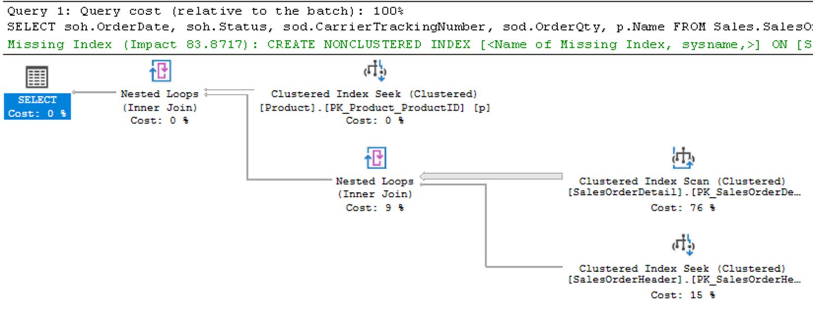
SalesOrderDetail is the most expensive operator, and the missing-index hint at the top says exactly what to create: key ProductID, includes SalesOrderID, CarrierTrackingNumber, OrderQty.Which, honestly, is enough to fix this query. Everything that follows is about the queries where it isn't enough.
SSMS was decoupled from the engine release cycle just before SQL Server 2017. That's the whole reason any of these features exist.
Right-click inside a plan and three newer entries appear:
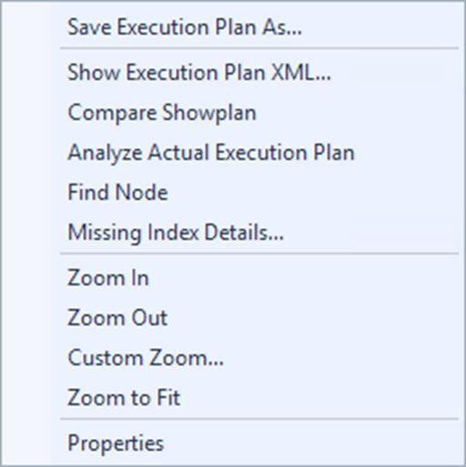
A second opinion on your plan, in a pane at the bottom of the window. Currently it knows exactly one thing — and it's the right thing.
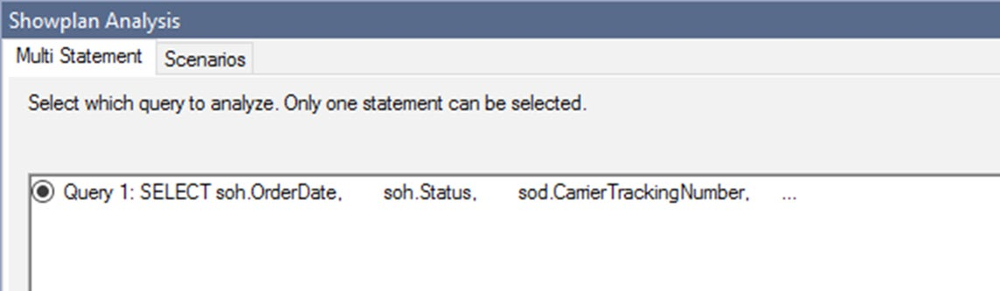
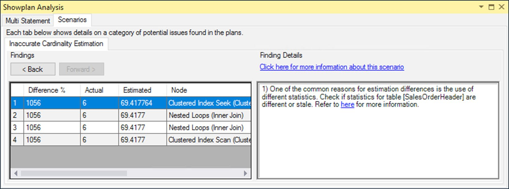
It's a good first scenario, because estimate-versus-actual mismatches are the most common cause of a stable query suddenly performing badly — and a genuinely serious problem during upgrades, especially from anything pre-2014 to 2014+ where the new cardinality estimator arrived (Chapter 10).
The scenario splits into two halves:
| Pane | Shows |
|---|---|
| Left | The operators whose estimates differ significantly, in a grid: Actual, Estimated, node, and % difference. |
| Right | One or more possible reasons for the mismatch — and therefore guidance on how to address it. |
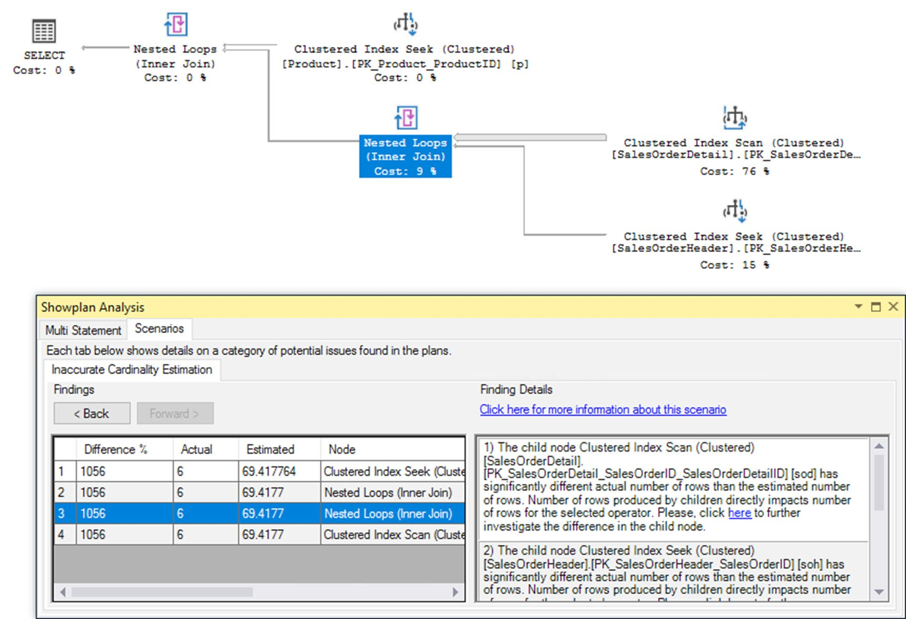
Two plans, side by side, with matching regions shaded and mismatched properties flagged. The feature the author says he uses "all the time".
Any combination works — actual vs actual, estimated vs estimated, actual vs estimated — and across different SQL Server versions or patch levels. The only requirement: two valid plans, at least one saved to a file.
SELECT soh.OrderDate,
soh.Status,
sod.CarrierTrackingNumber,
sod.OrderQty,
p.Name
FROM Sales.SalesOrderHeader AS soh
JOIN Sales.SalesOrderDetail AS sod
ON sod.SalesOrderID = soh.SalesOrderID
JOIN Production.Product AS p
ON p.ProductID = sod.ProductID
WHERE sod.ProductID = 897;.sqlplan file.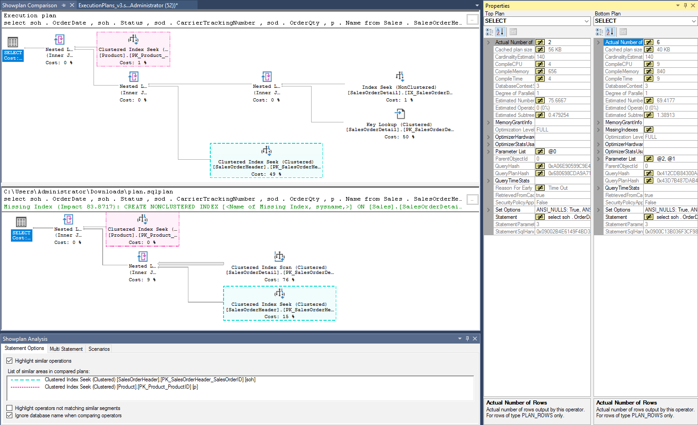
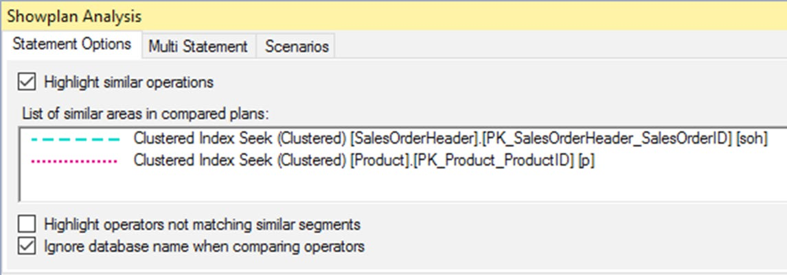
Property comparison is the other half. Select an operator in each plan and identical values stay plain while differing ones get a ≠ marker:
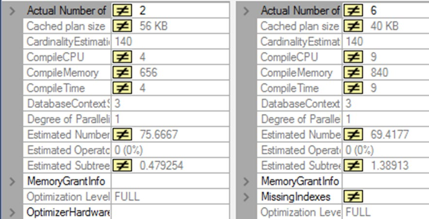
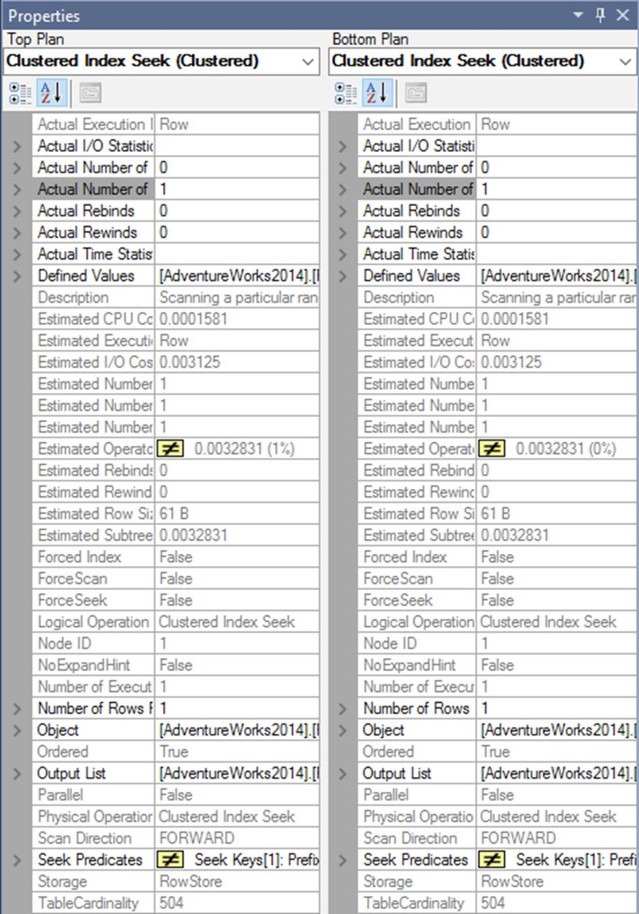
Product: almost everything matches. Two things flagged — Estimated Operator Cost, because the percentage of the whole plan differs even though the absolute cost is identical, and Seek Predicates, because forced parameterization gave the two executions different parameter names. Without forced parameterization you'd see the literal values differ instead.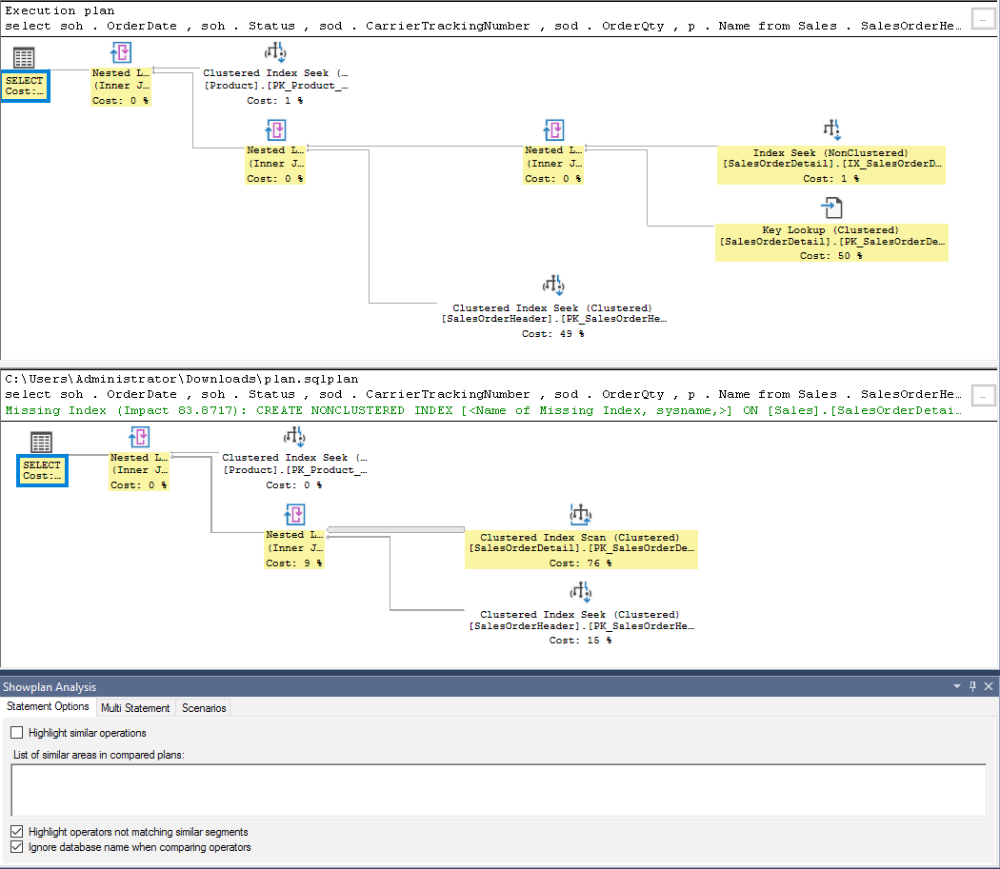
This is the feature's real value: differences between plans are often not glaring. They're one operator that changed, in a 200-operator plan, with a large performance consequence. Highlighting the odd one out finds it in seconds.
Search a plan by property value. Pointless on a six-operator plan; essential on a six-hundred-operator one.
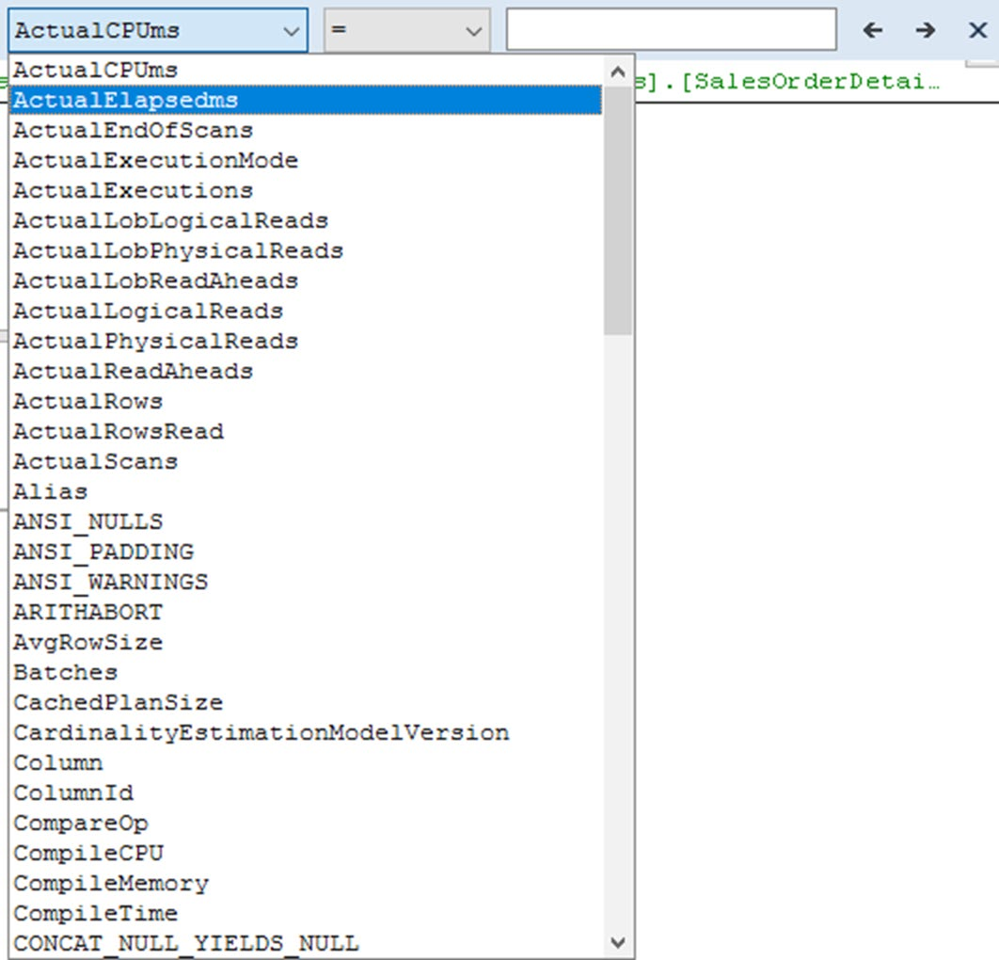
ActualRows, NodeId, ParentNodeID, object names, column names.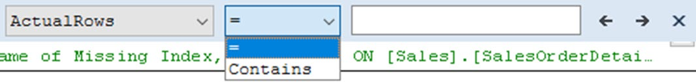
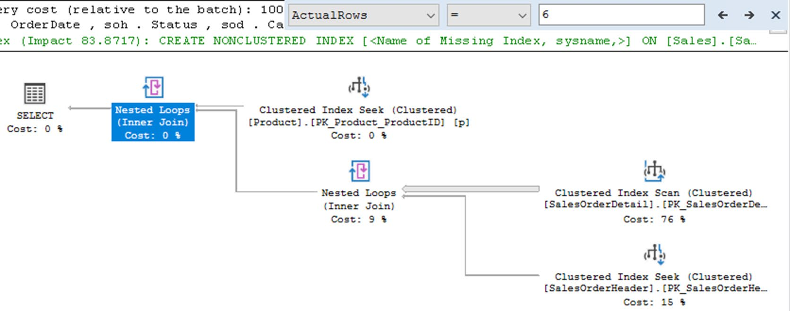
ActualRows = 6, then stepping through matches with the left/right arrows in NodeId order.Two searches that pay for the feature immediately:
ParentNodeID equals the NodeId of a Table Spool — finds everything consuming that spool, without hunting through a rat's nest of arrows.Per-operator runtime statistics, updating while the query runs. Three ways to get them, at three very different costs — and one way that's just a toolbar toggle.
Why you'd want this: to see data actually moving through the plan on a long-running query, and to get an estimated query progress — which is genuinely useful for deciding whether to kill something.
SELECT *
FROM sys.objects AS o,
sys.columns AS c;
A cartesian join with SELECT * — a violation of several rules this book has
spent sixteen chapters establishing. It also takes about 40 seconds, which is exactly what makes it a
good test bed.
| Version | What it added |
|---|---|
| SQL Server 2014 | sys.dm_exec_query_profiles — progress from another connection. High overhead: data was only captured if the query ran with the actual plan enabled. |
| 2014 SP2 / 2016 SP1 | Trace Flag 7412 — a lightweight query execution statistics profiling infrastructure. Both retrofitted into 2014 SP2. |
| SQL Server 2016 | The query_thread_profile Extended Event (which enables the trace flag for you), and live statistics in SSMS. |
| 2016+ | Include Live Query Statistics toggle in SSMS — no session, no trace flag, no DMV polling. |
Cost, cheapest first — and none of them free:
query_thread_profile event — it switches the flag on automatically.DBCC TRACEON (7412, -1);SELECT deqp.session_id,
deqp.node_id,
deqp.physical_operator_name,
deqp.estimate_row_count,
deqp.row_count
FROM sys.dm_exec_query_profiles AS deqp
WHERE deqp.session_id <> @@SPID
ORDER BY deqp.node_id ASC;
The session_id <> @@SPID filter keeps your own monitoring session out of
the results. The DMV returns far more columns than this; the two that matter are
estimate_row_count (the total the optimizer expects) and
row_count (what has actually been processed so far).
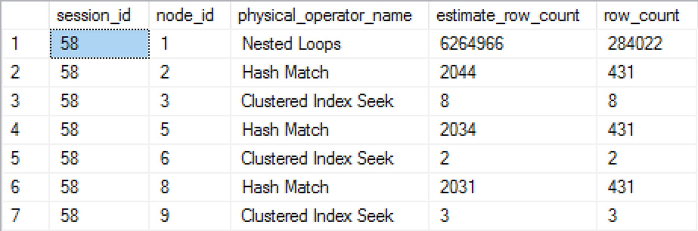
If you only want the completed numbers, capture query_thread_profile. It fires
at the end of query execution, once per operator per execution thread. It lives on the
Debug channel, so in the GUI you must select Debug from the Channel drop-down before the event
is even visible.
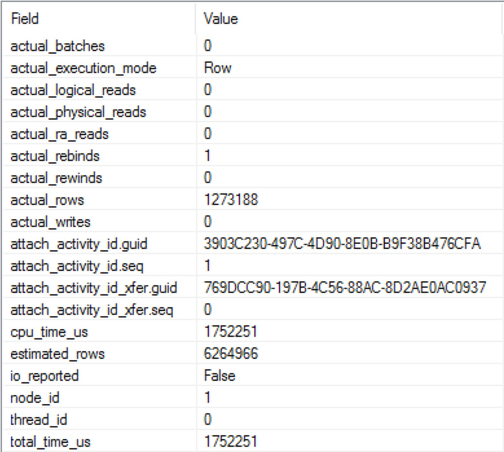
total_time_us and cpu_time_us, which the DMV doesn't hand you as neatly.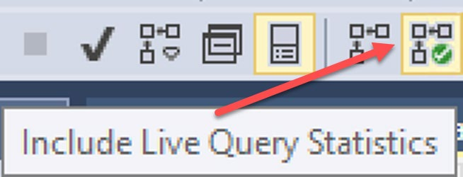
Turn it on, run the query, and you get statistics while it executes. Turn it off and you don't — unless you go via Activity Monitor. Since this captures the plan, you don't need the trace flag or the event for it to work; and having the trace flag on doesn't make this cheaper, because you're still paying for plan capture.
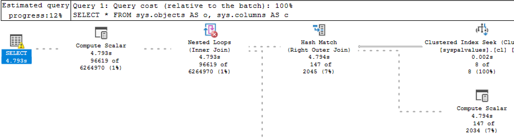
96619 of 6264970 (1 %). In SSMS the dashes move and the counters climb. When it finishes, it's just an ordinary plan.With the trace flag on (or the event captured), any tool can show a live plan for a running query without capturing an actual plan. Activity Monitor's Active Expensive Queries is one:
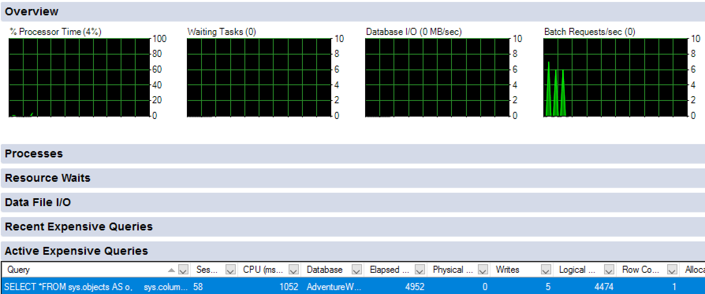
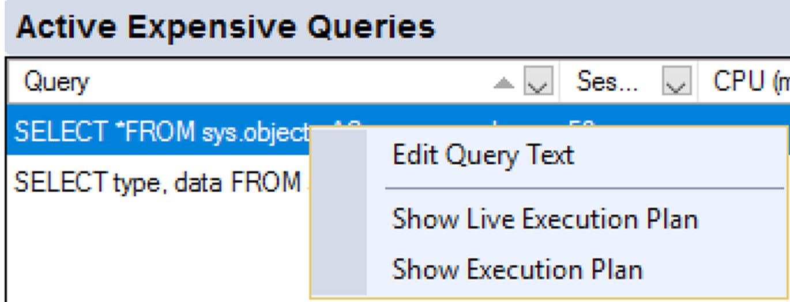
query_thread_profile may still be too expensive for some systems. Test before
enabling on production.
Not covered in depth, but named — because at some plan size, a different viewer is the practical answer.
| Tool | What it is | Why you'd reach for it |
|---|---|---|
| Plan Explorer (SentryOne) | Stand-alone application, many views and layouts of a plan. | Intelligent analysis of properties, index statistics and runtime stats to make large plans readable. |
| Supratimas | Free browser-based tool at supratimas.com. | Drag and drop query text or a .sqlplan; highlights important properties and the most expensive operators. Free/ads-supported SSMS plug-in, or paid. |
| SSMS Tools Pack (Mladen Prajdić) | Add-on collection for SSMS, including an Execution Plan Analyzer. | Works inside the query window; highlights expensive operators and large estimate/actual mismatches, and suggests actions. |
| SQL Monitor (Redgate) and similar | Performance monitoring tools that capture plans as part of diagnostics. | A different job: they don't teach you to read plans, they put the plan in the context of everything else happening at that moment. |
Which tool for which problem.
| Problem | Tool | Gotcha |
|---|---|---|
| "Are my estimates wrong?" | Analyze Actual Execution Plan → Scenarios | Only one scenario existed in SSMS 17 (Inaccurate Cardinality Estimation). It already multiplies estimate × executions for you. |
| "What changed between these two plans?" | Compare Showplan | Needs one plan saved as a file. Similar areas get colours; ignore database names by default. Switch to "not matching" to invert the highlight. |
| "Why is this property flagged when the value looks the same?" | Read it, don't trust the flag | Relative operator cost changes when the plan total changes, even if absolute cost is identical. |
| "Where does this column/spool appear in a 300-operator plan?" | Find Node | equals for numbers, contains for text; no wildcards needed; arrows step in NodeId order. |
| "How far along is this query?" | sys.dm_exec_query_profiles / Live Query Statistics | Both are relative to estimates. Nothing to see after it completes. |
| "How long did each operator really take?" | query_thread_profile event | Debug channel — must be enabled in the GUI. Fires at end of execution, per operator, per thread. |
| "Is it worth killing this query?" | Estimated query progress in a live plan | Progress is meaningless if the estimate is wrong. |
ParentNodeID = <a spool's NodeId>.